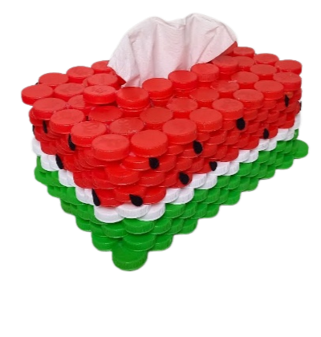

Tempat Tisu Dari Tutup Botol

Tutup botol plastik bisa diubah menjadi berbagai macam produk daur ulang.
Dengan menuangkan sedikit ide kreatif kita bisa mengubah sampah botol plastik sekali pakai
menjadi barang berguna maupun barang cantik lainnya.
Contohnya adalah membuatnya menjadi tempat tissue yang cantik seperti ini.
Berikut cara membuat tempat tissue dari tutup botol plastik :
Alat :
Bahan :
Langkah Kerja :
- Cat tutup botol sesuai selera
- Susun tutup botol hingga berbentuk balok dengan ukuran tissue yang akan dipakai
- Untuk bagian atas, gunakan sebuah alas (kardus / papan) agar dapat digunakan untuk mengisi ulang tissue
- Pastikan terdapat celah / lubang untuk mengeluarkan tissue
- Hias tempat tissue
Harga bahan:
- Tutup botol : Rp. 0
- Kardus / papan : Rp. 0
- Lem bakar : Rp. 10.000
Harga jual :
Rp. 15.000
Laba :
Rp. 5.000